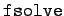

Inhalt Index DeskTop Bronstein

 Computeralgebrasysteme Anwendungen von Computeralgebrasystemen Lösung von Gleichungen und Gleichungssystemen Maple
Computeralgebrasysteme Anwendungen von Computeralgebrasystemen Lösung von Gleichungen und Gleichungssystemen Maple


Gleichungen, die transzendente Teile enthalten, lassen sich im allgemeinen nur numerisch lösen. Maple bietet für die numerische Lösung von Gleichungen beliebiger Art den Befehl . Mit seiner Hilfe versucht Maple, reelle Wurzeln der untersuchten Gleichung zu finden. Dabei wird in der Regel nur eine Wurzel angegeben. Oft haben jedoch transzendente Gleichungen viele Wurzeln. Deshalb erwartet der Befehl als drittes Argument die optionale Angabe des zu betrachtenden Bereichs für die Suche nach einer Wurzel.
| Beispiel | ||||||||
|